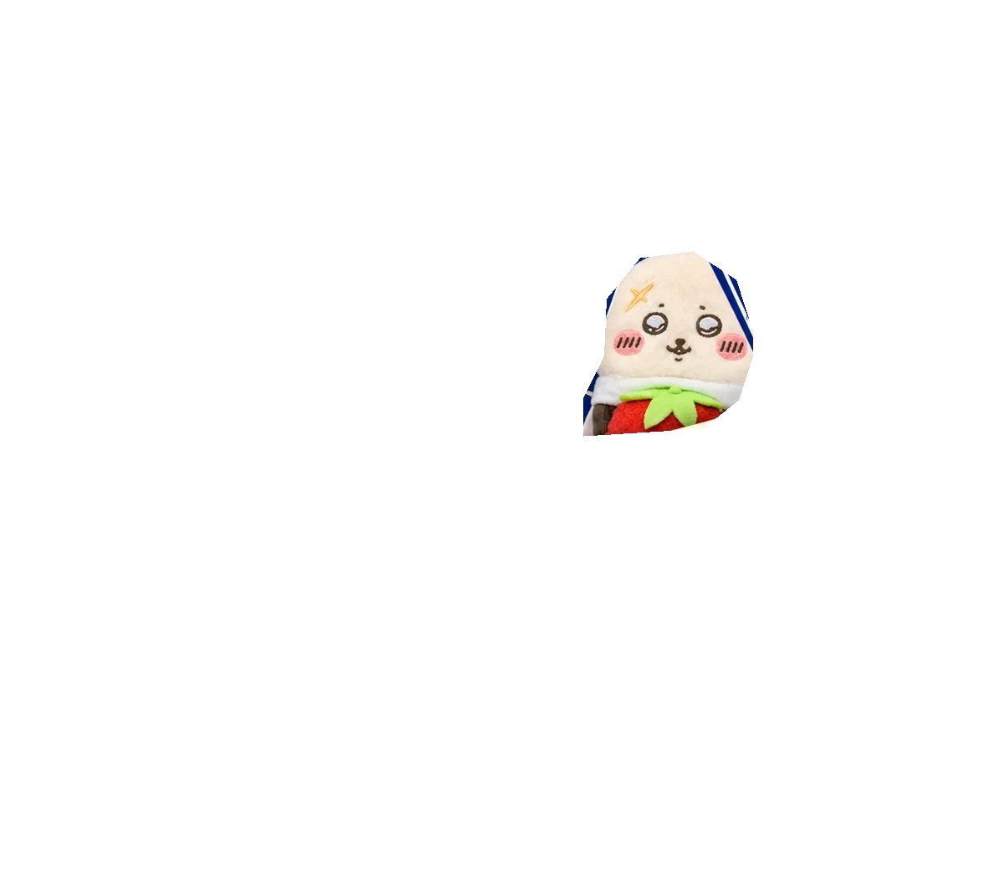
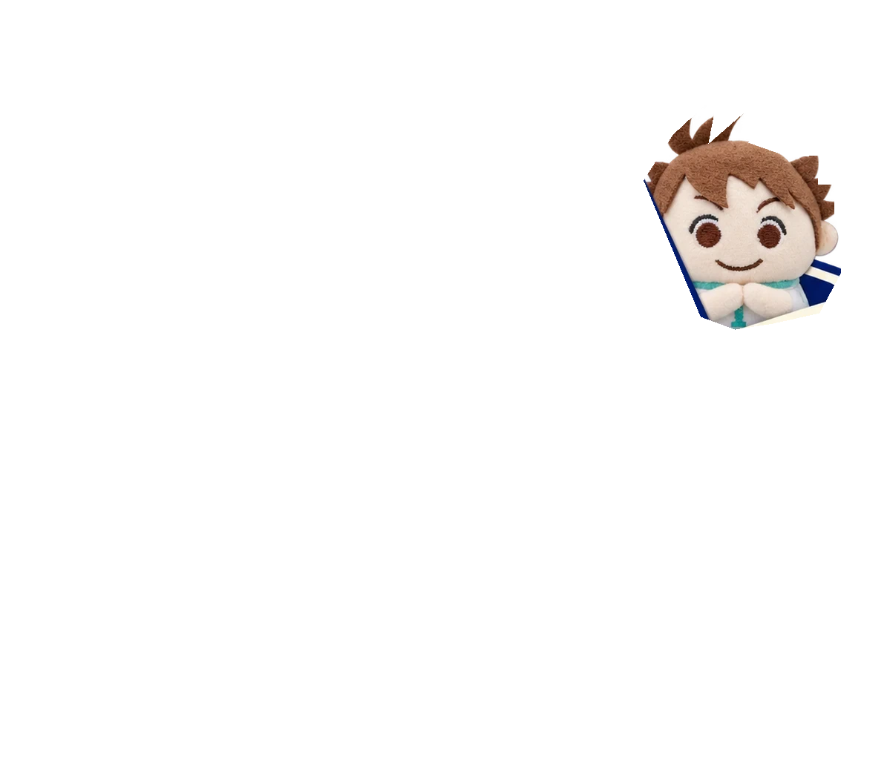
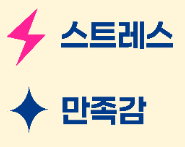

그들은 왜 이런 소비를 할까?






게이지는 감정 변화를 표현한 연출입니다.




게이지는 감정 변화를 표현한 연출입니다.
캐릭터 소비 연구에서는 즐거움을 얻으려는 소비 목적이 관찰됐다. 캐릭터 협업 제품 구매자를 조사한 연구에서도 감정적 가치는 만족에 이르는 중요한 매개요인으로 나타났다.
이은희 인하대 소비자학과 교수는 2030의 캐릭터 소비를 일상의 스트레스와 관계 피로를 덜어내는 정서적 동반 경험으로 해석했다.